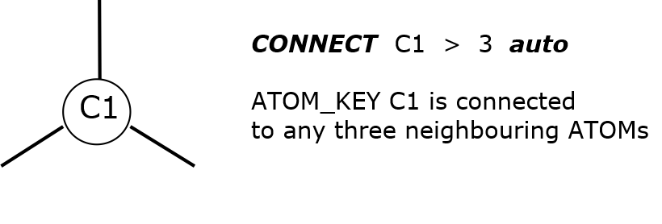

Bond connectivity¶
In DL_FIELD, there are three different types of bond connections can be defined in the MOLECULE templates. This is defined as follows:
Normal CONNECT.
This type of connection is commmonly encountered in covalent molecules, which means a physical or covalent bond is established between two ATOMs. DL_FIELD will use this information to setup relevant bond, angle and dihedral interactions within the MOLECULE.
self-CONNECT.
With this type of connection, DL_FIELD assumes the ATOM is an isolated species that does not form bond with other ATOMs.
For organic FF, self-CONNECT statements are seldom used except for pseudo points and shell part of a polarisable atom. The self-CONNECT is most commonly found in inorganic FF since ionic materials are usually interacted via non-bonded electrostatic interactions.
Example below shows the use of self-CONNECT statements, for silicalite.
MOLECULE silicalite4 2 2.0 zeolite silicalite. Si4 Si4+#4_zeolite_silicalite4 4.0 rigid ion versions O4 O2-#2_zeolite_silicalite4 -2.0 CONNECT Si4 > Si4 CONNECT O4 > O4 THREE-BODY O4 Si4 O4 END MOLECULE
auto-CONNECT.
This type of connection instructs DL_FIELD to determine the bond connections automatically and assign all the interactions accordingly. The general syntax is as follows:
CONNECT ATOM_KEY > number_of_neighbours AUTO
Similar to the self-CONNECT type, ATOM_KEYs must be used in the PDB file, instead of element symbols or any arbitrary labels. The number_of_neighbours indicates the number of bonds that are expected to connect to the ATOM. DL_FIELD will flag up an error if this number is not matched. Alternatively, the symbol * can be used to represent an unknown or variable number of neighbours.

{kind=link}
{kind=link}
Example below shows the use of auto-CONNECT features. The MOLECULE template can be found in alcohol.udff file in the Examples/ folder.
... ... MOLECULE_TYPE aliphatic_alcohol ROH 42.038 Alcohol END MOLECULE_TYPE MOLECULE aliphatic_alcohol 6 -0.22 Any aliphatic alcohol, except methanol CT3 Cp_alkane -0.27 CT2 Cs_alkane 0.05 H1 H1 H1 CT1 Ct_alkane 0.14 | | | HA HC_alkane 0.09 H1-C3-C2-...C2-OH-HO OH1 O_alcohol -0.66 | | | H HO_alcohol 0.43 H1 H1 H1 CONNECT CT3 > 4 auto CONNECT CT2 > 4 auto CONNECT CT1 > 4 auto CONNECT HA > 1 auto CONNECT OH1 > 2 auto CONNECT H > 1 auto END MOLECULE
Note that this MOLECULE template can be used to map all types of aliphatic alcohols (primary, secondary and tertiary). Unlike the MOLECULEs that use the normal CONNECT type, DL_FIELD permits the use of a subset number of ATOMs within the MOLECULEs with the auto-CONNECT type.
Example below shows a PDB file contains two alcohols: ethanol and 2-propanol (from alcohols.pdb in the Examples/ folder):
REMARK For CHARMM22_prot force field only. REMARK Must use in conjunction with the alcohol.udff file. REMARK COMPND ethanol and 2-propanol ATOM 1 CT3 ROH 1 7.995 0.329 -0.000 GRP1 C ATOM 2 HA ROH 1 8.844 -0.392 0.000 GRP1 H ATOM 4 HA ROH 1 8.096 0.976 0.901 GRP1 H ATOM 6 HA ROH 1 6.544 -1.038 0.907 GRP1 H ATOM 7 HA ROH 1 6.543 -1.039 -0.907 GRP1 H ATOM 3 HA ROH 1 8.096 0.975 -0.902 GRP1 H ATOM 8 H ROH 1 4.765 0.073 0.000 GRP1 H ATOM 9 OH1 ROH 1 5.606 0.538 -0.000 GRP1 O ATOM 5 CT2 ROH 1 6.660 -0.404 0.000 GRP1 C HETATM 1 CT3 ROH 2 -0.645 0.456 -0.012 GRP1 C HETATM 2 CT1 ROH 2 0.621 -0.395 0.006 GRP1 C HETATM 3 CT3 ROH 2 1.724 0.239 0.849 GRP1 C HETATM 4 HA ROH 2 0.986 -0.558 -1.036 GRP1 H HETATM 5 HA ROH 2 -0.441 1.467 -0.433 GRP1 H HETATM 6 HA ROH 2 -1.054 0.588 1.016 GRP1 H HETATM 7 HA ROH 2 -1.438 -0.017 -0.636 GRP1 H HETATM 8 HA ROH 2 2.632 -0.407 0.871 GRP1 H HETATM 9 HA ROH 2 1.388 0.392 1.899 GRP1 H HETATM 10 HA ROH 2 2.021 1.229 0.436 GRP1 H HETATM 11 H ROH 2 1.083 -2.236 0.451 GRP1 H HETATM 12 OH1 ROH 2 0.315 -1.665 0.532 GRP1 O END
Note that the alcohols are split into two residue sequences (1 and 2). It is enitrely valid if they are merged into one and the atomic sequences can also be mixed with one another. In addition, the third data column shows the use of ATOM_KEYs (such as HA, CT3, etc.), which in this case, is specific to CHARMM22 FF.